PyRoll GUI | Date: June 2026
The Results tab is populated automatically after a successful simulation run from the Pass Design tab. It displays all computed rolling data in structured form: a tabular summary of each roll pass, an engine utilization evaluation, and a comprehensive set of result plots. Data can be exported in multiple formats.
The tab remains empty until at least one sequence has been solved. Results are retained in memory until a new simulation is run or the project is reset. Previously saved projects that include simulation results will restore the results automatically when the project file is loaded.
At the top of the Results tab, one or more Simulation Configuration cards are shown — one per sequence. Each card summarises the parameters that governed the simulation.
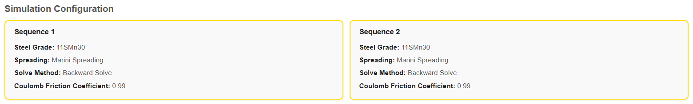
| Field | Description |
|---|---|
| Steel Grade | Material identifier taken from the In Profile tab (e.g. 11SMn30). |
| Spreading Model | The spreading law used by PyRolL for width calculation (e.g. Marini Spreading, Wusatowski). |
| Solve Method | Forward Solve, Backward Solve, or Standard Solve — determines the direction of the numerical iteration. |
| Coulomb Friction Coefficient | The global friction coefficient applied in the simulation. |
The results table lists all simulated roll passes as columns, with computed output parameters as rows. In a multi-sequence project the table spans all sequences from left to right, with a colour-coded sequence header row above the pass labels.
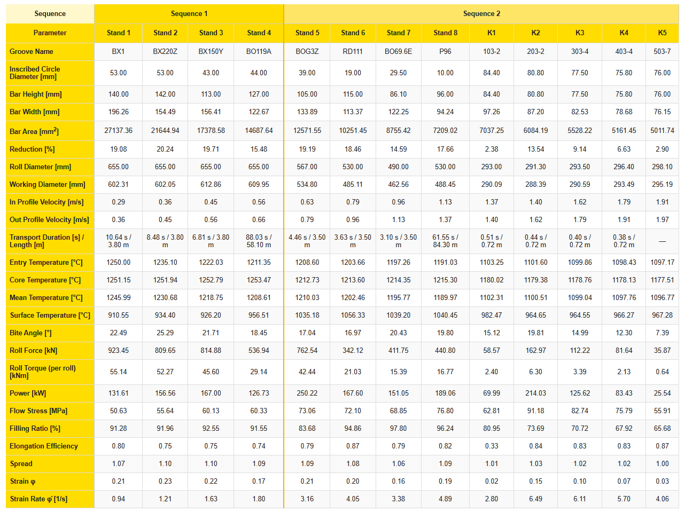
The following parameters are reported for each roll pass:
| Parameter | Unit | Description |
|---|---|---|
| Groove Name | — | Groove identifier as entered in the Pass Design tab (if assigned). |
| Inscribed Circle Diameter / Gap | mm | For two-roll passes: roll gap. For three-roll passes: inscribed circle diameter of the outgoing profile. |
| Bar Height | mm | Outgoing profile height. |
| Bar Width | mm | Outgoing profile width. |
| Bar Width (corrected) | mm | Width corrected for interstand tension or gear tension effects. Shown only when tension data is available. |
| Tension After | % | Interstand tension after this pass as a percentage of the material flow stress. Shown only when tension data is present. |
| Bar Area | mm² | Cross-section area of the outgoing profile. |
| Bar Area (corrected) | mm² | Cross-section area corrected for tension effects. Shown only when tension data is available. |
| Reduction | % | Fractional area reduction: (A_in − A_out) / A_in × 100. |
| Roll Diameter | mm | Nominal roll diameter (2 × nominal radius). |
| Working Diameter | mm | Effective working diameter at the groove base (2 × working radius). |
| Roll RPM (actual) | rpm | Actual rotational speed of the roll as set in the Pass Design. |
| Roll RPM (ideal, zero tension) | rpm | Ideal RPM calculated for zero interstand tension. |
| Motor RPM (ideal, zero tension) | rpm | Ideal motor RPM (after gear ratio) for zero tension condition. |
| In Profile Velocity | m/s | Bar speed at the entry of the roll pass. |
| Out Profile Velocity | m/s | Bar speed at the exit of the roll pass. |
| Transport Duration | s | Time the bar spends in the transport section following this pass. Shown as x.xx s / y.yy m. |
| Transport Length | m | Length of the transport section following this pass. |
| Entry Temperature | °C | Mean bar temperature entering this pass. |
| Core Temperature | °C | Core temperature of the outgoing profile. |
| Mean Temperature | °C | Volume-averaged temperature of the outgoing profile. |
| Surface Temperature | °C | Surface temperature of the outgoing profile. |
| Bite Angle | ° | Contact angle between roll and workpiece at entry. |
| Roll Force | kN | Total rolling force per roll pass. |
| Roll Force (corrected) | kN | Roll force corrected for tension effects. |
| Roll Torque (per roll) | kNm | Torque on a single roll. |
| Roll Torque (corrected, per roll) | kNm | Corrected roll torque for tension or gear effects. |
| Power | kW | Total motor power demand for this pass. |
| Power (corrected) | kW | Power corrected for tension effects. Shown only when tension data is available. |
| Flow Stress | MPa | Mean flow stress of the outgoing profile. |
| Filling Ratio | % | Ratio of actual bar cross-section area to the groove cross-section area. |
| Elongation Efficiency | — | Ratio of actual elongation to the theoretical ideal elongation. |
| Spread | — | Width increase factor: B_out / B_in. |
| Strain φ | — | True (logarithmic) strain: −ln(1 − reduction). |
| Strain Rate φ̇ | 1/s | Equivalent strain rate during the pass. |
Above the results table, a Hot / Cold toggle button is visible. This switch converts all dimension values (Bar Height, Bar Width, Bar Area, Diameter, Gap) between hot (simulated) and cold (room temperature) dimensions.
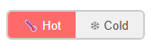
The conversion uses the thermal expansion coefficient and the material temperature from the In Profile configuration. Selecting Cold is useful when comparing simulated dimensions to final product drawings which are specified at room temperature.
When a Finishing Block is part of the rolling schedule, its passes appear in the results table with additional columns and adjusted labels:
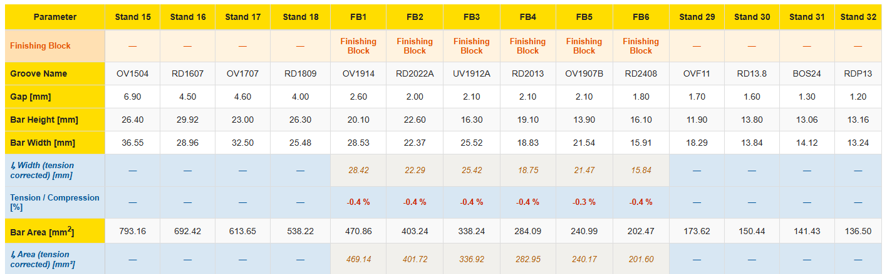
Below the Roll Pass Results table, an Engine Evaluation section is shown automatically whenever engines have been defined in the Engine Configuration tab. It compares the motor demands calculated by the simulation against the rated engine capacities.
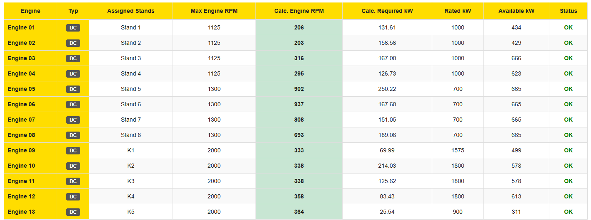
The table shows the following columns per engine:
| Column | Description |
|---|---|
| Engine | Engine name as configured in the Engine Configuration tab. |
| Typ | Motor type: DC (grey badge) or AC (blue badge). |
| Assigned Stands | The roll pass labels that are driven by this engine. |
| Max Engine RPM | Maximum mechanical speed at the roll (engine max RPM after gear ratio). |
| Calculated Engine RPM | The highest RPM required by any assigned stand in the simulation. Highlighted green (OK) or red (OVERLOAD). |
| Aggregated Required kW | Sum of power demands from all stands assigned to this engine. |
| Rated kW | Rated continuous power of the engine as configured. |
| Available Power kW | Derated power available at the actual operating RPM (AC motor characteristic). |
| Status | OK if all limits are within bounds, OVERLOAD if any limit is exceeded. |
When interstand tensions are present (e.g. from a Finishing Block), the engine evaluation table gains additional columns to reflect the tension-corrected demands:
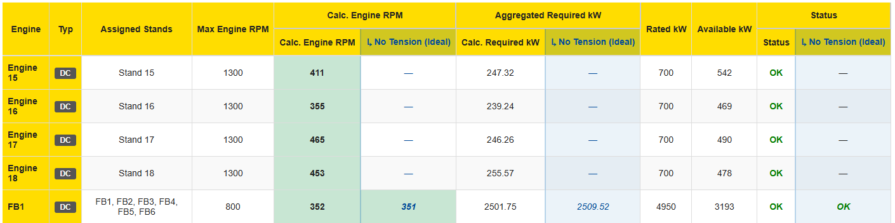
This allows direct comparison of the tension-free design point and the actual loaded condition side by side in the same row.
All plots are rendered below the Engine Evaluation. They are loaded progressively as the page scrolls to keep the interface responsive for long rolling schedules. Each plot can be exported individually via the Save Results export dialog.
Shows the outgoing cross-section area [mm²] for each roll pass as a line/point chart. This is the most direct indicator of the overall reduction along the rolling line — the curve should decrease monotonically from the initial billet area to the final product area.
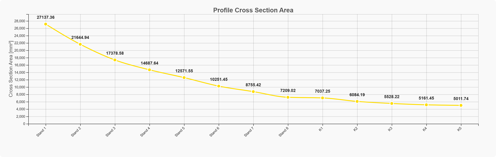
A combined bar/line chart showing two quantities per pass:
This chart is useful for identifying passes with disproportionately high or low reductions and for verifying that the reduction schedule is well balanced.
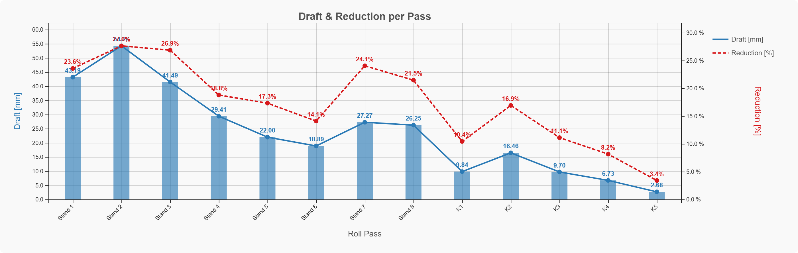
Displays the cumulative equivalent (logarithmic) true strain per pass. The strain accumulates pass by pass and reflects the total deformation history of the workpiece. A high value indicates heavy forming at that pass; a drop may indicate a tension reversal or a finishing block pass with very low reduction.
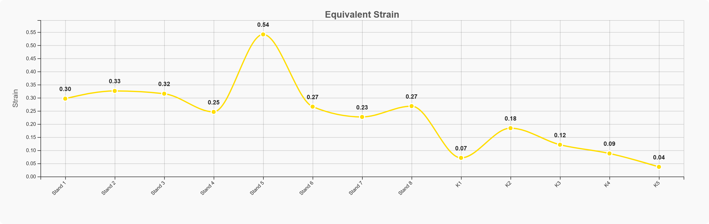
The filling ratio is the ratio of the actual bar cross-section area to the groove cross-section area: i = A_bar / A_groove.
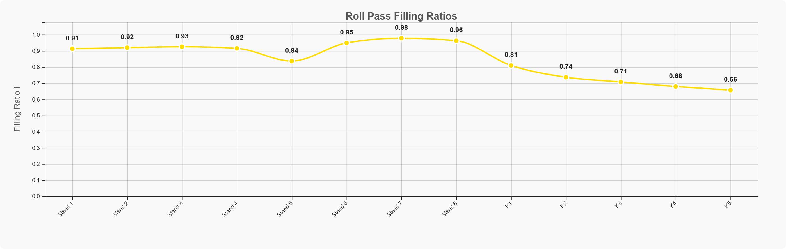
The temperature section contains two sub-plots:
In a multi-sequence project, the temperature plot spans all sequences in the order they were solved.
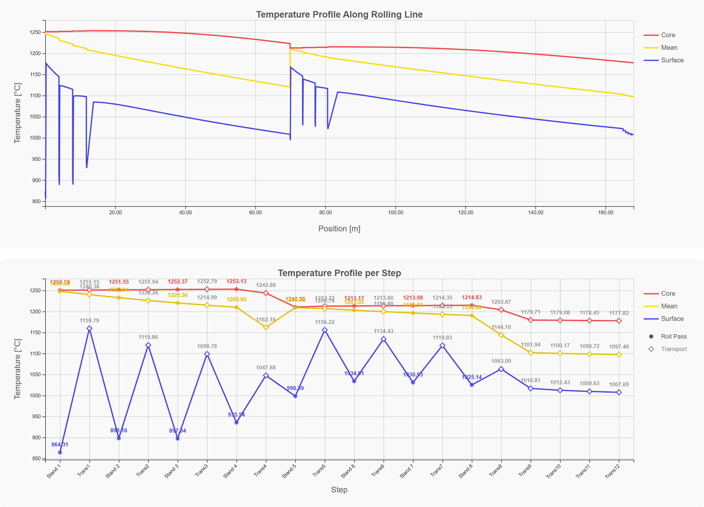
Bar chart showing the total rolling force [kN] for each pass. Higher forces typically occur in the earlier (roughing) passes due to larger cross-sections and higher material flow stress. The chart is useful for sizing roll journals, housings, and screwdown systems.
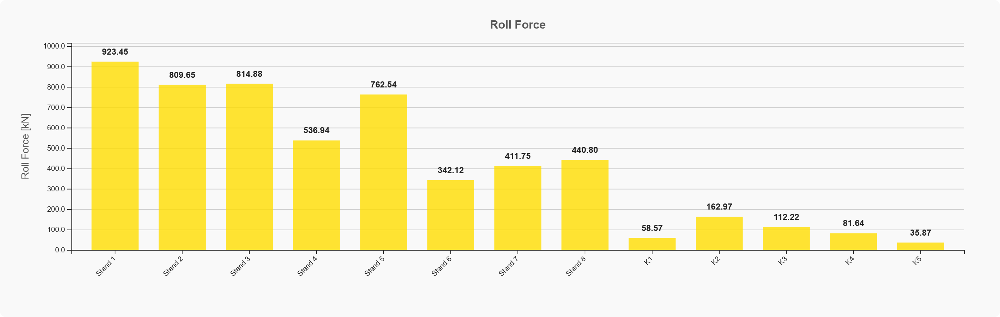
Bar chart showing the torque per roll [kNm] for each pass. Combined with the RPM values from the results table, this allows the required motor power to be cross-checked: P = 2 · π · n/60 · M_roll · (number of rolls).
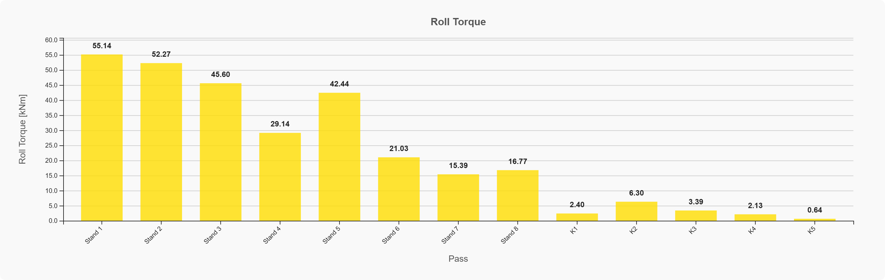
Combined line chart with two series:
Finishing block passes typically show very low elongation efficiency (≈0.3–0.4) and spread close to 1.0, which reflects the constrained deformation mode in small-diameter passing grooves.
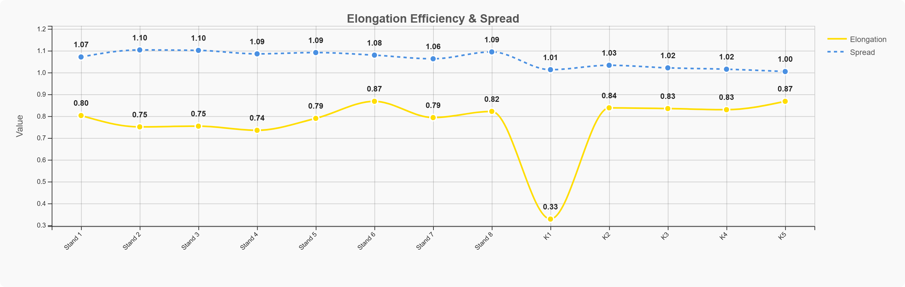
Combined bar/line chart with two series:
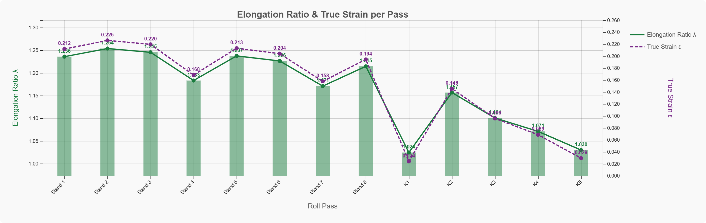
Grouped bar chart showing the bar speed [m/s] entering and leaving each roll pass:
The velocity increases continuously from stand to stand (volume conservation). This chart is critical for verifying that the RPM schedule is consistent — mismatches lead to interstand tension or compression.
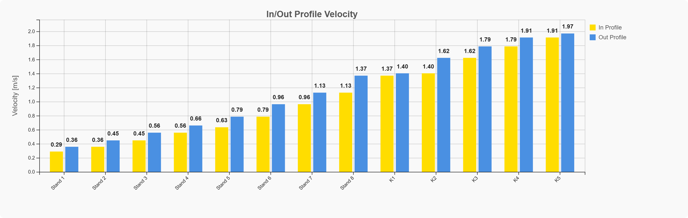
This plot appears exclusively when at least one Finishing Block is present in the schedule. It shows the demanded motor power [kW] per engine across all finishing block passes, alongside the rated engine power for comparison. The chart makes it easy to identify which engine is closest to its capacity limit.
The chart shows:
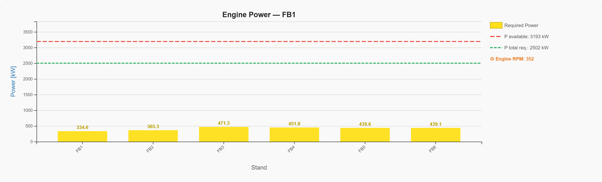
Also only shown when a Finishing Block is present. Displays the torque utilization for each finishing block pass as a percentage of the engine's rated torque capacity. A utilization above 100 % indicates an overload condition for that pass.
The chart shows:
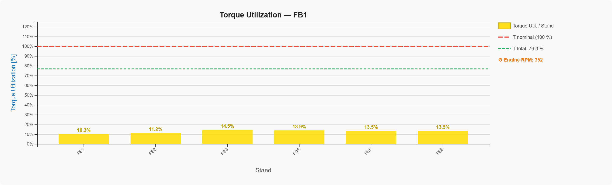
Shown only when at least one Asymmetric Roll Pass is part of the schedule. Plots the local elongation factor λ and spread factor β as a function of the half-width position [mm] for each asymmetric pass. This shows how deformation is distributed across the bar's cross-section — the centre elongates more than the edges.
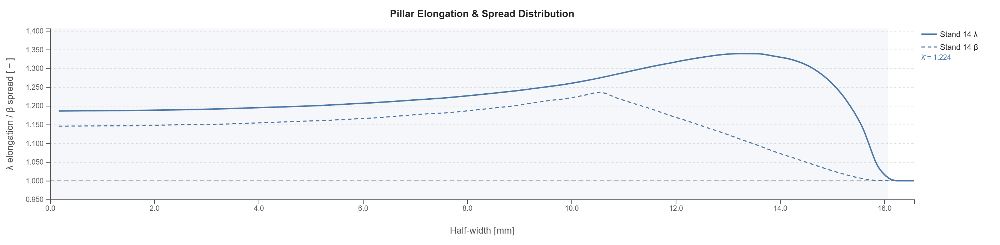
Also only shown for Asymmetric Roll Passes. Provides a detailed breakdown per pass with:
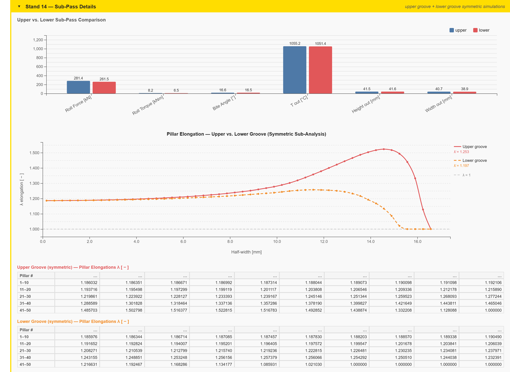
Shown only when at least one Flat Pass (Two-Roll Pass with a flat or box groove) is present in the schedule. The Siebel diagram classifies each flat pass as either Bulging or Constriction based on the ratios b₀/h₀ and LD/h₀:
Each flat pass is plotted as a yellow circle. Points in the Bulging region (upper-left, red background) indicate that the material tends to bulge outward. Points in the Constriction region (lower-right, blue background) indicate lateral constriction. The boundary curve corresponds to the Siebel criterion constant C = 0.355.
Points above the boundary curve are annotated with their distance Δ from the boundary, indicating the magnitude of the tendency to bulge. This is relevant for edge quality and camber prediction.
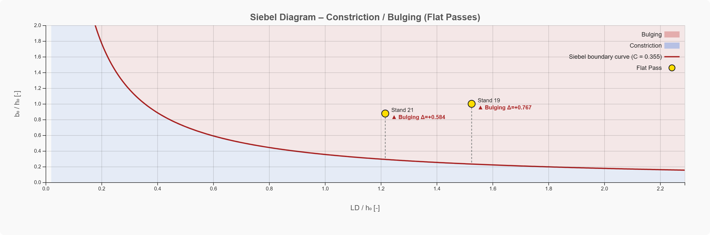
Click 💾 Save Results to open the export dialog. Enter a custom filename in the input field to the left of the button before exporting — all generated files will use this name as a prefix. Six formats are available:
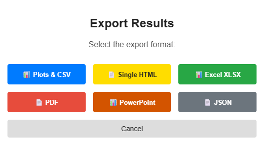
| Format | Contents |
|---|---|
| 📊 Plots & CSV (ZIP) | All visible plots as PNG images + results table as CSV, packaged in a ZIP archive. |
| 📄 Single HTML | Self-contained HTML file with the results table and all plots embedded as images. Can be opened in any browser without the application. |
| 📊 Excel XLSX | Results table in Excel format with formatted cells and column headers. |
| Multi-page landscape PDF: configuration page, results table, engine evaluation, and one plot per page. | |
| 📊 PowerPoint | PPTX presentation with one slide per plot, suitable for reporting. |
| 📄 JSON | Full raw PyRolL simulation output as a JSON file. Useful for post-processing or archiving. |
At the bottom of the Results tab, a collapsible Raw Data panel is available. Click the Raw Data ▼ Show header to expand it.
The panel shows the complete PyRolL simulation output as formatted JSON, up to a preview of 500 lines. If the output exceeds 500 lines (which is typical for large rolling schedules with pillar data), a notice is shown:
Showing first 500 of N lines — use Export → JSON for full data.
The raw JSON contains all PyRolL pass objects with their full attribute set, including intermediate values that are not shown in the results table (e.g. individual pillar positions, sub-pass data, heat transfer coefficients).
Michael Molter | PyRoll GUI – Results Guide